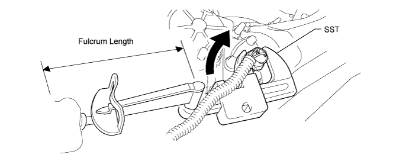

REAR DIFFERENTIAL LOCK POSITION SWITCH (w/ Differential Lock) > INSTALLATION |
| 1. INSTALL NO. 1 TRANSFER INDICATOR SWITCH |
Using a SST, install a new gasket and the indicator switch.

Connect the connector.
| 2. INSTALL REAR DIFFERENTIAL LOCK ACTUATOR PROTECTOR |
 |
Install the protector with the 2 nuts.
| 3. INSTALL DIFFERENTIAL PROTECTOR ASSEMBLY |
 |
Attach the protector with the bolt and nut.
Connect the 2 connector clamps and wire harness clamp.